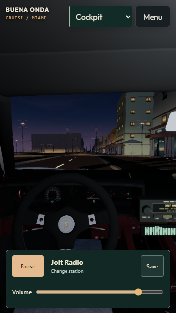
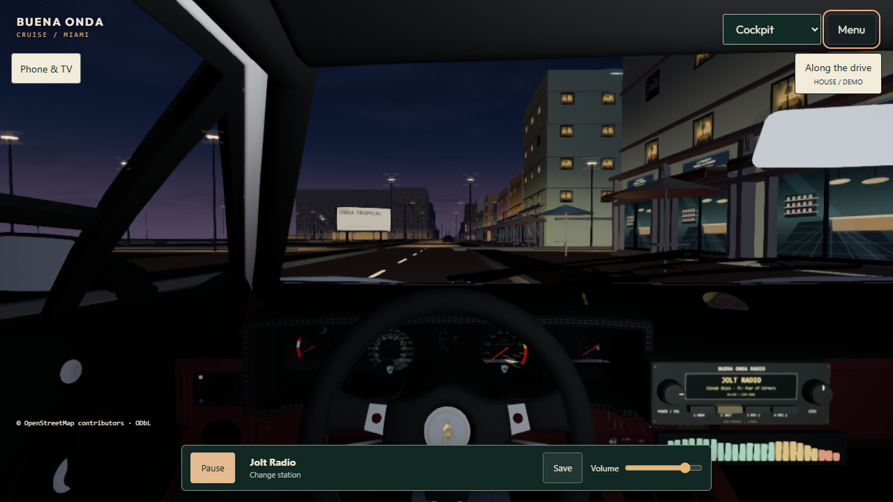

Frozen prior build versus the isolated After Hours prototype. Both captures use Countach, cockpit, Night and the same staged route location. Parking timing can introduce small pose differences; this is a visual review, not a pixel-exact render benchmark. Steering and suspension are best assessed in the working drive.


18-second actual gameplay capture, without broadcast audio · Roadside campaign · Demo business inspection
Native Unreal remains a separately saved foundation, without the requested cinematic upgrade. Phone/TV mirroring hardware and physical mobile performance are unverified. See README.md and PERFORMANCE.md for measured results and limits.